에너지관리기사 (2013-06-02 기출문제)
1과목: 연소공학
1. 액체를 미립화하기 위해 분무를 할 때 분무를 지배는하는 요소로서 가장 거리가 먼 것은?
- 액류의 운동량
- 액류와 기체의 표면적에 따른 저항력
- 액류와 액공 사이의 마찰력
- 액체와 기체 사이의 표면장력
(정답률: 72%)

2. 옥탄(C8H18)이 공기과잉율 2로 연소 시 연소가스 중 산소의 몰분율은?
- 0.0647
- 0.1012
- 0.1294
- 0.2024
(정답률: 63%)
3. 수소 4kg을 과잉공기계수 1.4의 공기로 완전 연소시킬 때 발생하는 연소가스 중의 산소량은 약 몇 kg인가?
- 3.20
- 4.48
- 6.40
- 12.8
(정답률: 46%)
4. 수소 1kg을 공기 중에서 연소시켰을 때 생성된 건연소 가스량은 약 몇 Sm3인가? (단, 공기 중의 산소와 질소의 함유비는 21v% 와 79v% 이다.)
- 5.60
- 21.07
- 26.50
- 32.32
(정답률: 63%)
5. 액화석유가스의 성질에 대한 설명 중 틀린 것은?
- 가스의 비중은 공기보다 무겁다.
- 상온, 상압에서는 액체이다.
- 천연고무를 잘 용해시킨다.
- 물에는 잘 녹지 않는다.
(정답률: 84%)
6. 다음 중 분젠식 가스버너가 아닌 것은?
- 링버너
- 적외선버너
- 슬릿버너
- 블라스트버너
(정답률: 68%)
7. 저위발열량 93766kJ/Sm3의 C3H8을 공기비 1.2로 연소시킬 때의 이론연소온도는 약 몇 K인가? (단, 배기가스의 평균비열은 1.653kJ/Sm3 · K이고 다른 조건은 무시한다.)
- 1563
- 1672
- 1783
- 1856
(정답률: 33%)
8. 연료의 중량분율이 다음 조성과 같은 갈탄을 연소시키기 위한 이론공기량은 약 몇 Sm3/(kg갈탄) 인가?
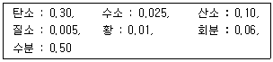
- 2.37
- 2.67
- 3.03
- 3.92
(정답률: 50%)
9. 다음 중 연소 온도에 가장 큰 영향을 미치는 것은?
- 연료의 착화온도
- 연료의 고위발열량
- 연료의 휘발분
- 연소용 공기의 공기비
(정답률: 85%)
10. 가연성 혼합가스의 폭발한계 측정에 영향을 주는 요소로서 가장 거리가 먼 것은?
- 점화에너지
- 온도
- 용기의 두께
- 산소농도
(정답률: 88%)
11. 연소장치의 연소효율 (Ec)식이
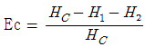
일 때 식에서 HC는 연료의 발열량, H1은 연재 중의 미연탄소에 의한 손실을 의미한다면 H2는 무엇을 뜻하는가?- 연료의 저발열량
- 전열손실
- 불완전연소에 따른 손실
- 현열손실
(정답률: 87%)
12. 환열실의 전열면적[m2]과 전열량[kcal/h]사이의 관계는? (단, 전열면적은 F, 전열량은 Q, 총괄전열계수는 V이며, △tm은 평균온도차이다.)
- Q = F × V × △tm
- Q = F / △tm
- Q = F × △tm
- Q = V / (F × △tm)
(정답률: 86%)
13. 가스버너로 연료가스를 연소시키면서 가스의 유출속도를 점차 빠르게 하였다. 이때 어떤 현상이 발생하겠는가?
- 불꽃이 엉클어지면서 짧아진다.
- 불꽃이 엉클어지면서 길어진다.
- 불꽃형태는 변함없으나 밝아진다.
- 별다른 변화를 찾기 힘들다.
(정답률: 84%)
14. 배기가스의 분석값이 CO2 : 11.5%, O2 : 2.0%, N2 : 86.5%이었다. 이 때 공기비(m)는 얼마인가?
- 1.1
- 1.2
- 1.3
- 1.4
(정답률: 63%)
15. 가연성 혼합기의 폭발방지를 위한 방법으로 가장 거리가 먼 것은?
- 산소농도의 최소화
- 불활성 가스 치환
- 불활성 가스의 첨가
- 이중용기 사용
(정답률: 79%)
16. 고체연료의 일반적인 연소형태로 볼 수 없는 것은?
- 증발연소
- 유동층연소
- 표면연소
- 분해연소
(정답률: 58%)
17. 연소가스의 조성에서 O2를 옳게 나타낸 식은? (단, Lo : 이론 공기량, G : 실제 습연소가스량, m : 공기비이다.)
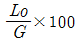
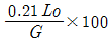
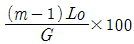
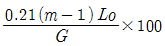
(정답률: 72%)
18. 공기와 연료의 혼합기체의 표시에 대한 설명 중 옳은 것은?
- 공기비(excess air ratio)는 연공비의 역수와 같다.
- 연공비(fuel air ratio)라 함은 가연 혼합기 중의 공기와 연료의 질량비로 정의된다.
- 공연비(air fuel ratio)라 함은 가연 혼합기 중의 연료와 공기의 질량비로 정의된다.
- 당량비(equivalence ratio)는 실제연공비와 이론연공비의 비로 정의된다.
(정답률: 81%)
19. 연소계산에서 열정산에 대한 정의로 옳은 것은?
- 발생하는 모든 발열량의 합계
- 발생하는 모든 입열과 출열의 수지계산
- 발생하는 모든 열의 이용 효율
- 연소장치에서 손실되는 모든 열량의 합계
(정답률: 73%)
20. 다음 기체연료 중 고위발열량(MJ/Sm3)이 가장 큰 것은?
- 고로가스
- 천연가스
- 석탄가스
- 수성가스
(정답률: 84%)
2과목: 열역학
21. 20°C, 500kPa의 공기가 들어있는 2m3 체적인 탱크가 있다. 탱크속의 공기 압력을 일정하게 유지하면서 온도 40°C가 되도록 하려면 몇 kg의 공기를 밖으로 내보내야 하는가? (단, 공기의 기체상수는 0.287kJ/kg·k 이다.)
- 0.76
- 0.99
- 1.14
- 11.9
(정답률: 37%)
22.
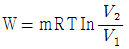
의 식은 이상기체의 밀폐계에 대한 압축일을 나타낸다. 이 식이 적용될 수 있는 과정으로 옳은 것은?- 등온과정(isothermal process)
- 등압과정(constant pressure process)
- 단열과정(adiabatic process)
- 등적과정(constant volume process)
(정답률: 55%)
23. 상법칙(phase rule)에 대한 설명 중 틀린 것은?
- 평형에서만 존재하는 관계식이다.
- 평형이든 비평형이든 무관하게 존재하는 관계식이다.
- 각 상의 상대적인 양에 대한 것은 알 수 없다.
- 단일성분 2상의 경우 강성적 상태량의 자유도는 1이다.
(정답률: 74%)
24. 그림과 같이 2개의 단열변화와 2개의 등압변화로 되어 있는 가스터빈의 이상적 사이클 효율은?
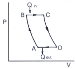
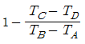
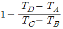
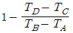
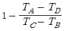
(정답률: 50%)
25. 일정정압비열(CP = 1.0kJ/kg·K)을 가정하고, 공기 100kg을 400°C에서 120°C로 냉각할 때 엔탈피 변화는?
- -24000kJ
- -26000kJ
- -28000kJ
- -30000kJ
(정답률: 74%)
26. 다음 랭킨사이클(Rankine cycle)의 T – S 선도에서 사선부분 4-5-6-7-4는 무엇을 나타내는가?
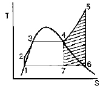
- 수증기의 과열에 의한 추가적 일(work)
- 수증기 과열을 위한 추가적 열량
- 응축기에서 제거 되어야 할 열량
- 보일러(boiler)의 열부하
(정답률: 74%)
27. 증기 터빈 노즐에서 분출하는 수증기의 이론 속도와 실제 속도를 각각 Ct, Ca로 표시할 때 초속을 무시하면 노즐 효율 ηn 과는 어떠한 관계가 있는가?
- ηn = Ca / Ct
- ηn = (Ca / Ct)2
- ηn =
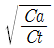
- ηn = (Ca / Ct)3
(정답률: 53%)
28. 유동하는 기체의 압력을 P, 속력을 V, 밀도를 ρ, 중력가속도를 g, 높이를 z, 절대온도 T, 정적비열 Cv 라고 할 때, 기체의 단위질량당 역학적 에너지에 포함되지 않는 것은?
- P / ρ
- V2 / 2
- gz
- CvT
(정답률: 63%)
29. 건도 x 인 습증기 1kg을 동일한 압력에서 가열하여 과열증기를 얻었다. 가열하여야 하는 열량은 얼마인가? (단, 이 압력에서 포화액의 엔탈피는 hf, 포화증기의 엔탈피는 hg, 증기의 평균 정압비열은 Cp, 과열도는 A이다.)
- (1-x)(hg-hf)+CpA
- x(hg-hf)+CpA
- (1-x)hg+CpA
- xhg+CpA
(정답률: 49%)
30. T-S 선도에서 그림과 같은 사이클은 어느 사이클인가? (단, 2-3, 4-1 과정에서는 압력이 일정하다.)
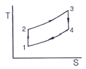
- 오토 사이클
- 디젤 사이클
- 브레이턴 사이클
- 랭킨 사이클
(정답률: 37%)
31. 온도와 관련된 설명으로 틀린 것은?
- 온도 측정의 타당성에 대한 근거는 열역학 제 0법칙이다.
- 온도가 10°C 올라가면 절대온도는 283.15K 올라간다.
- 섭씨온도는 물의 어는점과 끓는점을 기준으로 삼는다.
- SI 단위계에서 열역학적 온도 눈금(scale)으로는 켈빈 눈금을 사용한다.
(정답률: 78%)
32. 유체가 담겨 있는 밀폐계가 어떤 과정을 거칠 때 그 에너지식은 △U12=Q12으로 표현된다. 이 밀폐계와 관련된 일은 팽창일 또는 압축일 뿐이라고 가정할 경우 이 계가 거쳐간 과정에 해당하는 것은? (단, U는 내부에너지를, Q는 전달된 열량을 나타낸다.)
- 등온과정(isothermal process)
- 정압과정(constant pressure proess)
- 정적과정(constant volume process)
- 단열과정(adiabatic process)
(정답률: 46%)
33. 일반적으로 팽창밸브(expansion valve)에서의 냉매 상태변화는 다음 중 어디에 속하는가?
- 등온팽창과정
- 정압팽창과정
- 등엔트로피과정
- 등엔탈피과정
(정답률: 45%)
34. 열역학 제2법칙에 대한 설명이 아닌 것은?
- 제2종 영구기관의 제작은 불가능하다.
- 고립계의 엔트로피는 감소하지 않는다.
- 열은 자체적으로 저온에서 고온으로 이동이 곤란하다.
- 열과 일은 변환이 가능하며, 에너지보존 법칙이 성립한다.
(정답률: 80%)
35. 10°C 와 80°C 사이에서 작동되는 카르노(Carnot)냉동기의 성능계수(COP)는 얼마인가?
- 8.00
- 6.51
- 5.64
- 4.04
(정답률: 55%)
36. 정압과정에서 –20°C의 탄산가스의 체적은 0°C 에서의 체적의 얼마가 되는가?
- 0.632
- 0.714
- 0.832
- 0.927
(정답률: 48%)
37. 다음 중 어떤 압력 상태의 과열 수증기 엔트로피가 가장 작은가? (단, 온도는 동일하다고 가정한다.)
- 5기압
- 10기압
- 15기압
- 20기압
(정답률: 67%)
38. 비가역 사이클에 대한 클라우시우스의 적분은?
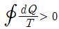
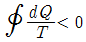
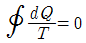
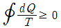
(정답률: 63%)
39. 비열 4.184kJ/kg·K인 물 15kg을 0°C에서 80°C까지 가열할 때, 물의 엔트로피 상승은 약 몇 kJ/K인가?
- 9.5
- 16.1
- 21.9
- 30.8
(정답률: 59%)
40. 냉동사이클을 비교하여 설명한 것으로 잘못된 것은?
- 이상적인 Carnot 사이클이 최고의 COP를 나타낸다.
- 가역팽창 엔진을 가진 증기압축 냉동사이클의 성능계수는 최고값에 접근한다.
- 보통의 증기압축 사이클은 이론치보다 약간 낮은 효율을 갖는다.
- 공기사이클은 최고의 효율을 가진다.
(정답률: 67%)
3과목: 계측방법
41. 다음 중 미세한 압력차를 측정하기에 적합한 압력계는?
- 경사 마노미터
- 부르동 게이지
- 수직 마노미터
- 파이로미터(pyrometer)
(정답률: 78%)
42. 유효숫자를 고려하여 52.2 + 0.032 + 3.5171을 계산할 때 맞는 것은?(오류 신고가 접수된 문제입니다. 반드시 정답과 해설을 확인하시기 바랍니다.)
- 55.74
- 55.75
- 55.7
- 55.8
(정답률: 46%)
43. 측정하고자 하는 상태량과 독립적 크기를 조정할 수 있는 기준량과 비교하여 측정, 계측하는 방법은?
- 보상법
- 편위법
- 치환법
- 영위법
(정답률: 50%)
44. 용적식 유량계의 일반적인 특징에 대한 설명으로 틀린 것은?
- 정도(精度)가 높다.
- 고점도의 유체측정이 가능하다.
- 맥동에 의한 영향이 없다.
- 구조가 간단하다.
(정답률: 37%)
45. 피토관의 전압을 Pt(kgf/m2), 정압을 Ps(kgf/m2), 유체의 비중량을 γ(kg/m3), 중력가속도를 g(9.8m/s2)라고 하면 유속 V(m/s)를 구하는 식은?
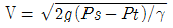
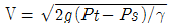
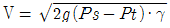
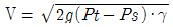
(정답률: 72%)
46. 다음 각 습도계의 특징에 대한 설명으로 틀린 것은?
- 노점 습도계는 저습도를 측정할 수 있다.
- 모발 습도계는 2년마다 모발을 바꾸어 주어야 한다.
- 통풍 건습구 습도계는 3~5m/s의 통풍이 필요하다.
- 저항식 습도계는 직류전압을 사용하여 측정한다.
(정답률: 76%)
47. 연소분석법으로서 산소와 시료가스를 피펫에 천천히 넣고 백금선 등으로 연소시키는 방법으로 우일클레법이라고도 하는 방법은?
- 분별연소법
- 폭발법
- 완만 연소법
- 흡수분석법
(정답률: 61%)
48. 물을 함유한 공기와 건조공기의 열전도율의 차이를 이용하여 습도를 측정하는 것은?
- 염화리듐 습도센서
- 고분자 습도센서
- 서미스터 습도센서
- 수정진동자 습도센서
(정답률: 79%)
49. 열전대의 냉접점에 대한 설명으로 옳은 것은?
- 측온 물체에 닿는 접전이다.
- 냉각을 하여 항상 0°C를 유지한 점이다.
- 감온접점이라고도 한다.
- 자동평형 계기에서의 냉접점은 0°C 이하로 유지한다.
(정답률: 67%)
50. 색(色)온도계의 색깔에 따른 온도가 옳게 짝지어진 것은?
- 붉은색 – 600°C
- 오렌지색 – 800°C
- 매우 눈부신 흰색 – 2000°C
- 황색 – 2500°C
(정답률: 71%)
51. 바이메탈 온도게에서 자유단위 변위거리 δ의 값을 구하는 식은? (단, K는 정수, t는 온도변화, α는 선팽창 계수이다.)
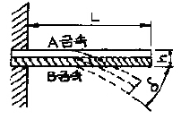
- δ = K(αA - αB)L2t2/h
- δ = K(αA - αB)L2t/h
- δ = K(αA - αB)L2t2h
- δ = K(αA - αB)L2th
(정답률: 60%)
52. 서미스터(thermistor)의 재질로서 부적당한 것은?
- Ni
- Co
- Mn
- AI
(정답률: 63%)
53. 오리피스(orifice), 벤투리관(venturi tube)을 이용하여 유량을 측정하고자 할 때 다음 중 필요한 것은?
- 측정기구 전, 후의 압력차
- 측정기구 전, 후의 온도차
- 측정기구 입구에 가해지는 압력
- 측정기구의 출구 압력
(정답률: 86%)
54. 피드백제어에 대한 설명으로 틀린 것은?
- 설비비의 고액투입이 요구된다.
- 운영에 있어 고도의 기술이 요구된다.
- 일부 고장이 있어도 전생산에 영향이 없다.
- 수리가 어렵다.
(정답률: 84%)
55. 점도 단위인 1Pa·s와 같은 값을 가지는 단위는?
- kg/m·s
- P
- kgf·s/m2
- cP
(정답률: 57%)
56. 다음 중 간접식 액면측정 방법이 아닌 것은?
- 방사선식 액면계
- 초음파식 액면계
- 플로트식 액면계
- 저항전극식 액면계
(정답률: 77%)
57. 다음 중 유량측정의 원리와 유량계를 바르게 연결한 것은?
- 유체에 작용하는 힘 – 터빈 유량계
- 유속변화로 인한 압력차 – 용적식 유량계
- 흐름에 의한 냉각효과 – 전자기 유량계
- 파동의 전파 시간차 – 조리개 유량계
(정답률: 70%)
58. 적분동작의 특징에 대한 설명으로 틀린 것은?
- 잔류편차가 제어된다.
- 제어의 안전성이 떨어진다.
- 일반적으로 진동하는 경향이 있다.
- 편차의 크기와 지속시간이 반비례하는 동작이다.
(정답률: 57%)
59. 전자유량계의 측정원리는?
- 베르누이(Bernoulli)법칙
- 패러데이(Faraday)법칙
- 레더포드(Rutherford)법칙
- 줄(Joule)법칙
(정답률: 72%)
60. 다음 중 온도계의 분류가 다른 하나는?
- 열팽창식
- 압력식
- 광전관식
- 제겔콘
(정답률: 56%)
4과목: 열설비재료 및 관계법규
61. 반규석질 내화물의 특징에 대한 설명으로 옳은 것은?
- 염기성내화물이다.
- 열에 의한 치수변동율이 작다.
- 저온에서 강도가 작다.
- MgO, ZnO 를 50~80% 함유한다.
(정답률: 49%)
62. 열매체를 가열하는 보일러의 용량은 몇 kW를 1t/h로 계산하는가?
- 477.8
- 581.5
- 697.8
- 789.5
(정답률: 59%)
63. 효율관리기자재의 제조업자는 효율관리시험기관으로부터 측정결과를 통보받은 날로부터 며칠 이내에 그 측정결과를 에너지관리공단에 신고하여야 하는가?(관련 규정 개정전 문제로 여기서는 기존 정답인 4번을 정답 처리 합니다. 자세한 내용은 해설을 참고하세요.)
- 7일
- 15일
- 30일
- 60일
(정답률: 76%)
64. 다음 중 평균효율관리기자재에 해당하는 것은?
- 전기냉방기
- 승용자동차
- 삼상유도전동기
- 조명기기
(정답률: 66%)
65. 터널요의 3개 구조부에 해당하지 않는 것은?
- 용융부
- 예열부
- 소성부
- 냉각부
(정답률: 57%)
66. 샤모트질(Chamotte)벽돌의 주성분은?
- Al2O3, 2SiO2, 2H2O
- Al2O3, 7SiO2, H2O
- FeO, Cr2O3
- MgCO3
(정답률: 74%)
67. 용융석영을 방사하여 제조하며 융점이 높고 내약품성이 우수하며 최고 사용온도가 약 1100°C인 단열재는?
- 석면
- 폼글라스
- 펄라이트
- 세라믹 화이버
(정답률: 74%)
68. 에너지 사용계획의 검토기준에 해당되지 않는 것은?
- 폐열의 회수·활용 및 폐기물 에너지이용 기술개발의 적절성
- 부문별·용도별 에너지 수요의 적절성
- 연료·열 및 전기의 공급체계, 공급원 선택 및 관련시설 건설계획의 적절성
- 고효율 에너지이용 시스템 및 설비 설치의 적절성
(정답률: 65%)
69. 관의 신축량에 대한 설명으로 옳은 것은?
- 신축량은 관의 열팽창계수, 길이, 온도차 등에 반비례 한다.
- 식축량은 관의 길이, 온도차에는 비례하지만 열팽창계수에는 반비례한다.
- 신축량은 관의 열팽창계수, 길이, 온도차 등에 비례한다.
- 신축량은 관의 열팽창계수에 비례하고 온도차와 길이에 반비례한다.
(정답률: 79%)
70. 보온재의 열전도계수에 대한 설명 중 틀린 것은?
- 보온재의 함수율이 크게 되면 열전도계수도 증가한다.
- 보온재의 기공율이 클수록 열전도계수는 작아진다.
- 보온재는 열전도계수가 작을수록 좋다.
- 온도가 상승하면 열전도계수는 감소된다.
(정답률: 54%)
71. 강관의 특징에 대한 설명으로 틀린 것은?
- 내충격성이 크다.
- 인장강도가 크다.
- 부식에 강하다.
- 관의 접합이 쉽다.
(정답률: 65%)
72. 작업이 간편하고 조업주기가 단축되며 요체의 보유열을 이용할 수 있어 경제적인 반연속식 요는?
- 셔틀요
- 윤요
- 터널요
- 도염식요
(정답률: 65%)
73. 시공업자단체에 대한 설명으로 틀린 것은?
- 관련 주무부처 장관의 인가를 받아 설립한다.
- 단체는 개인으로 한다.
- 시공업자는 시공업자단체에 가입할 수 있다.
- 단체는 시공업에 관한 사항을 정부에 건의할 수 있다.
(정답률: 76%)
74. 보온면의 방산열량 1100kJ/m2, 나면의 방산열량 1600kJ/m2일 때 보온재의 보온 효율은 약 몇 %인가?
- 25
- 31
- 45
- 69
(정답률: 56%)
75. 연간에너지사용량이 30만 티오이인 자가 구역별로 나누어 에너지 진단을 하고자 할 때 에너지진단주기는?
- 1년
- 2년
- 3년
- 5년
(정답률: 68%)
76. 용선로(cupola)에 대한 설명으로 틀린 것은?
- 대량생산이 가능하다.
- 용해 특성상 용탕에 탄소, 황, 인 등의 불순물이 들어가기 쉽다.
- 동합금, 경합금 등 비철금속 용해로로 주로 사용된다.
- 다른 용해로에 비해 열효율이 좋고 용해시간이 빠르다.
(정답률: 59%)
77. 다음 그림에 맞는 로의 명칭은?
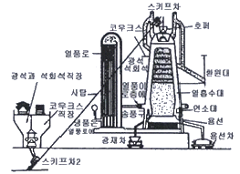
- 배소로
- 고로
- 평로
- 용선로
(정답률: 81%)
78. 보일러에 부착하는 안전밸브에 대한 설명으로 틀린 것은?
- 스프링식 안전밸브는 고압, 대용량 보일러에 적합하다.
- 지렛대식 안전밸브는 추의 이동에 따라 증기의 취출압력을 조정한다.
- 스프링식 안전밸브는 스프링의 신축으로 증기의 취출압력을 조절한다.
- 중추식 안전밸브는 밸브 위에 추를 올려 놓아 증기압력과 수직이 되게 하여 고압용으로 적합하다.
(정답률: 66%)
79. 특정열사용 기자재 설치·시공범위가 아닌 것은?
- 강철제보일러 세관
- 철금속가열로의 시공
- 태양열 집열기 배관
- 금속균열로의 배관
(정답률: 57%)
80. 배관설비의 지지에 필요한 조건을 설명한 것 중 틀린 것은?
- 온도의 변화에 따른 배관신축을 충분히 고려하여야 한다.
- 배관 시공 시 필요한 배관기울기를 용이하게 조정할 수 있어야 한다.
- 배관설비의 진동과 소음을 외부로 쉽게 전달할 수 있어야 한다.
- 수격현상 및 외부로부터 진동과 힘에 대하여 견고하여야 한다.
(정답률: 87%)
5과목: 열설비설계
81. 보일러 내에서 물을 강제 순환시키는 이유로 옳은 것은?
- 보일러의 성능을 양호하게 하기 위하여
- 보일러의 압력이 상승하면 포화수와 포화증기의 비중량의 차가 점점 줄어들기 때문에
- 관의 마찰 저항을 줄이기 위하여
- 보일러 드럼이 1개이기 때문에
(정답률: 61%)
82. 보일러와 압력용기에서 일반적으로 사용되는 계산식에 의해 산정되는 두께로서 부식여유를 포함한 두께를 무엇이라 하는가?
- 계산 두께
- 실제 두께
- 최소 두께
- 최대 두께
(정답률: 78%)
83. 보일러의 성능계산 시 사용되는 증발율(kg/m2h)에 대하여 가장 옳게 나타낸 것은?
- 실제 증발량에 대한 발생증기 엔탈피와의 비
- 연료 소비량에 대한 상당증발량과의 비
- 상당 증발량에 대한 실제증발량과의 비
- 전열 면적에 대한 실제증발량과의 비
(정답률: 52%)
84. 유체의 압력손실은 배관 설계 시 중요한 인자이다. 다음 중 압력손실과의 관계로서 틀린 것은?
- 압력손실은 관마찰계수에 비례한다.
- 압력손실은 유속의 제곱에 비례한다.
- 압력손실은 관의 길이에 반비례한다.
- 압력손실은 관의 내경에 반비례한다.
(정답률: 71%)
85. 송풍기 압력이 20kPa, 연소가스량이 1500m3/min, 송풍기 효율이 0.7일 때 송풍기의 실제 소요동력은 몇 kW 인가? (단, 송풍기의 여유율은 0.1이다)
- 550
- 700
- 714
- 786
(정답률: 28%)
86. 다음 열설비에 사용되는 관 중 관내 유속이 30~80m/sec정도로서 가장 빠른 관은?
- 응축수관
- 펌프 토출관
- 포화 증기관
- 과열 증기관
(정답률: 63%)
87. 보일러 실내에 설치하는 배관에 대한 설명으로 틀린 것은?
- 배관은 외부에 노출하여 시공하여야 한다.
- 배관의 이음부와 전기계량기와의 거리는 30cm이상의 거리를 유지하여야 한다.
- 관경 50mm인 배관은 3m마다 고정장치를 설치하여야 한다.
- 배관을 나사접합으로 하는 경우에는 관용 테이퍼나사에 의하여야 한다.
(정답률: 53%)
88. 노통식 보일러에서 파형부의 길이가 230mm 미만인 파형 노통의 최소 두께(t)를 결정하는 식은? (단, P는 최소 사용압력(MPa), D는 노통의 파형부에서의 최대 내경과 최소 내경의 평균치(mm), C는 노통의 종류에 따른 상수이다.)
- 10PD
- 10P/D
- C/10PD
- 10PD/C
(정답률: 71%)
89. 맞대기용접은 용접방법에 따라 그루브를 만들어야 한다. 판의 두께 20mm의 강판을 맞대기 용접 이음할 때 적합한 그루브의 형상은?
- I 형
- J 형
- X 형
- H 형
(정답률: 74%)
90. Shell & Tube 열교환기에 대한 설명으로 틀린 것은?
- 현장제작이 가능하여 좁은 공간에 설치가 가능하다.
- 플레이트 열교환기에 비해서 열통과율이 낮다.
- Shell과 Tube 내의 흐름은 직류보다 향류흐름의 선능이 더 우수하다.
- 구조상 고온·고압에 견딜 수 있어 석유화학공업 분야 등에서 많이 이용된다.
(정답률: 64%)
91. 최고사용압력이 1.5MPa을 넘는 강철제보일러의 수압시험압력은 최고사용압력의 몇 배로 하여야 하는가?
- 1.5
- 2
- 2.5
- 3
(정답률: 63%)
92. 벽돌을 1⑤°C ~ 120°C 사이에서 건조시킨 무게를 W, 이것을 물속에서 3시간 끓인 이후 유지시킨 무게를 W1, 물속에서 꺼내어 표면수분을 닦은 무게를 W2라고 할 때 부피비중을 구하는 식은?
- W/(W2-W1)
- (W-W1)/(W2-W1)
- W/(W1-W2)
- (W-W2)/(W2-W1)
(정답률: 58%)
93. 보일러 계속사용검사기준의 순수처리기준이 아닌 것은?
- 총경도(mg CaCO3/ℓ) : 0
- pH(298K{25°C}에서) : 7 ~ 9
- 실리카(mg SiO2/ℓ) : 흔적이 나타나지 않음
- 전기 전도율(298K{25°C}에서의) : 0.⑤μs/cm 이하
(정답률: 61%)
94. 압력용기를 옥내에 설치하는 경우에 대한 설명으로 옳은 것은?
- 압력용기의 천정과의 거리는 압력용기 본체상부로부터 1m 이상 이어야 한다.
- 압력용기 본체와 벽과의 거리는 1m 이상 이어야 한다.
- 인접한 압력용기와의 거리는 1m 이상 이어야 한다.
- 유독성 물질을 취급하는 압력용기는 1개 이상의 출입구 및 환기장치가 있어야 한다.
(정답률: 62%)
95. 입형 보일러의 특징에 대한 설명으로 틀린 것은?
- 설치 면적이 좁다.
- 전열면적이 적고 효율이 낮다.
- 증발량이 적으며 습증기가 발생한다.
- 증기실이 커서 내부 청소 및 검사가 쉽다.
(정답률: 67%)
96. 전열면에 비등기포가 생겨 열유속이 급격하게 증대하며, 가열면상에 서로 다른 기포의 발생이 나타나는 비등과정을 무엇이라고 하는가?
- 단상액체 자연대류
- 핵비등(nucleate boiling)
- 천이비등(transition boiling)
- 막비등(film boiling)
(정답률: 75%)
97. 리벳이음에 대한 설명으로 옳은 것은?
- 기밀작업 시 리베팅하고 냉각된 후 가장자리에 코킹작업을 한다.
- 열간 리베팅은 작업 완료 후 수축이 없어 판을 죄는 힘이 없고 마찰저항도 없다.
- 보일러 제작 시 과거에는 용접이음을 통한 작업이 주류였으나 최근에는 리벳이음이 대부분이다.
- 리벳 재료는 전기적 부식을 막기 위해 판재와 다른 종류의 재질계통을 쓰게 하는 것을 원칙으로 한다.
(정답률: 69%)
98. 수관 1개의 길이가 2500mm, 수관의 내경이 60mm, 수관의 두께가 5mm인 수관 100개를 갖는 수관 보일러의 전열면적은 약 몇 m2 인가? (문제오류로 실제 시험에서는 모두 정답처리 되었습니다. 여기서는 1번을 누르면 정답 처리 됩니다.)
- 40
- 79
- 471
- 550
(정답률: 47%)
99. 다음 중 원통형 보일러가 아닌 것은?
- 코나시 보일러
- 랭커셔 보일러
- 케와니 보일러
- 다꾸마 보일러
(정답률: 63%)
100. 1시간당 35kg의 연료를 연소하여 열이 전부 일로 변환된다면 발생하는 동력은 몇 마력(PS)인가? (단, 연료 1kg의 발열량이 6800kcal 이다.)
- 376
- 474
- 525
- 555
(정답률: 42%)